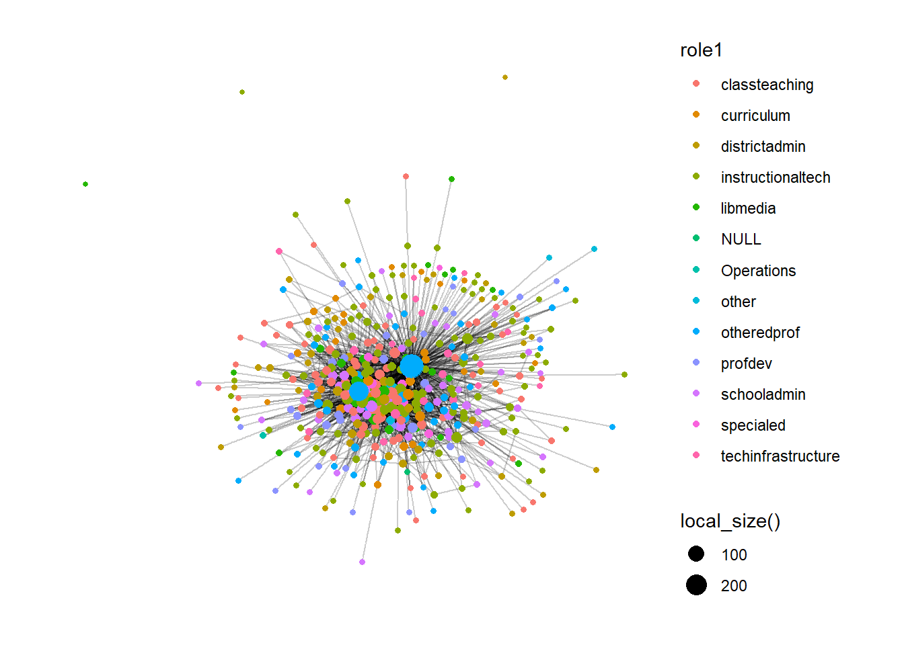
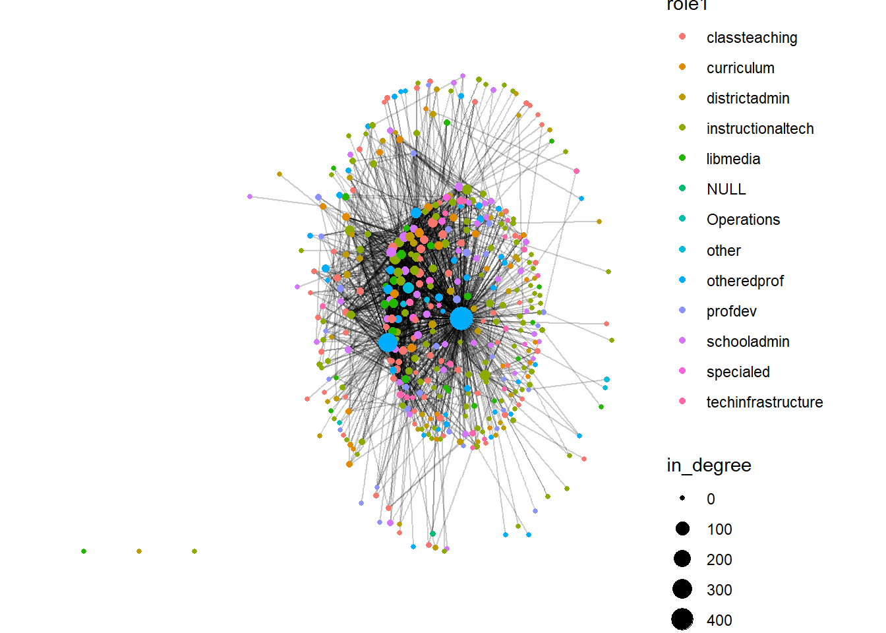

# Install and load the igraph package
install.packages("igraph")
library(igraph)
# Example: Load an edge list from CSV
edge_list <- read.csv("data/friendship_edges.csv")
# Create the graph object (directed network)
g <- graph_from_data_frame(edge_list, directed = TRUE)
# Plot the network
plot(g, main = "Friendship Network")Chapter 3 Social Network Analyses (Relational Data)
3.1 Overview
Social network analysis (SNA) is the process of investigating social structures through the use of networks and graph theory. It is a technique used to map and measure relationships and flows between people, groups, organizations, computers, or other information/knowledge processing entities. SNA can be a useful tool for understanding the team structures, for example, in an online classroom. It can be an additional layer of understanding the outcomes (or predictors) of certain instructional interventions. Used this way SNA can be used to identify patterns and trends in social networks, as well as to understand how these networks operate. Additionally, SNA can be used to predict future behavior in social networks, and to design interventions that aim to improve the functioning of these networks.
3.2 Accessing SNA Data
Social Network Analysis (SNA) relies on relational data—information about connections (edges) between entities (nodes) such as students, teachers, or organizations. Compared to traditional survey or tabular data, SNA requires pairwise relational information. In education, this could include “who collaborates with whom,” “who talks to whom,” or digital traces of discussion and collaboration in online platforms.
3.2.1 Types and Sources of SNA Data
There are several common sources and structures for SNA data in educational and social science contexts:
- Survey-based Network Data: Collected via roster or name generator questions, e.g., “List the classmates you discuss assignments with.”
- Behavioral/Observational Data: Derived from logs of actual interactions, e.g., forum replies, emails, classroom seating.
- Archival or Digital Trace Data: Extracted from digital platforms such as MOOCs, LMS discussion forums, Slack, Twitter, or Facebook.
- Administrative/Organizational Data: Information about formal structures such as team membership or co-authorship.
Data Structure: Most SNA data are formatted as: - Edge List (two columns: source and target) - Adjacency Matrix (rows and columns are actors; cell values indicate a tie) - Node Attributes (supplementary information about each node, e.g., gender, role)
3.2.2 Example 1: Creating a Simple Network from an Edge List
Below is an example of constructing a network from a simple CSV edge list. This mirrors typical classroom survey data (“who do you consider your friend in this class?”).
3.2.3 Example 2: Generating Network Data from Digital Traces
Many educational datasets now come from online discussion forums, MOOCs, or LMS systems. For example, the MOOC case study (Kellogg & Edelmann, 2015) uses reply relationships in online courses to construct discussion networks.
# Suppose you have a data frame with columns: from_user, to_user
mooc_edges <- read.csv("data/mooc_discussion_edges.csv")
g_mooc <- graph_from_data_frame(mooc_edges, directed = TRUE)
plot(g_mooc, main = "MOOC Discussion Network")3.2.4 Example 3: Collecting SNA Data via Surveys
If you want to collect your own network data:
Ask participants to name or select (from a roster) their friends, collaborators, or contacts.
Compile responses into an edge list.
Example survey prompt:
“Please list up to five classmates you seek help from most frequently.”
Tip:
Survey-based SNA is easier to manage with small to medium groups. For larger networks, digital trace or archival data may be more practical.
3.2.5 Node Attribute Data
You can also load additional data about each node (student, teacher, etc.) to enable richer analyses (e.g., centrality by gender or role).
node_attributes <- read.csv("data/friendship_nodes.csv")
# Add attributes to igraph object
V(g)$gender <- node_attributes$gender[match(V(g)$name, node_attributes$name)]3.2.6 Further Examples
- Public Datasets:
- Synthetic Data:
R’s
igraphpackage can also generate sample networks for practice:g_sample <- sample_gnp(n = 10, p = 0.3) plot(g_sample, main = "Random Sample Network")
3.2.7 Best Practices and Tips
- Ethics: Social network data can be sensitive. Protect anonymity and comply with IRB/data use guidelines.
- Format Consistency: Always clarify whether ties are directed/undirected, binary/weighted, and ensure consistent formatting.
- Missing Data: Especially in survey-based SNA, missing responses can impact network structure and interpretation.
3.2.8 Summary
Accessing SNA data involves both careful design (in the case of surveys/observations) and extraction/wrangling (in the case of digital traces or archival records). The choice of data source and structure will directly influence the kinds of questions you can answer with SNA.
Recommended Reading:
- Borgatti, S. P., Everett, M. G., & Johnson, J. C. (2018). Analyzing Social Networks (2nd ed). SAGE.
- Kellogg, S., & Edelmann, A. (2015). Massive open online course discussion forums as networks.
3.3 Network Management & Measurement in Social Network Analysis
3.3.1 Purpose + Case
Purpose: This section demonstrates how to manage, measure, and visualize large-scale discussion networks from online professional development settings. Through this real-world example, we guide readers in loading relational data, constructing a directed network, and conducting a suite of essential SNA measures. The focus is on classroom- and course-level online discussions, which are representative of many contemporary educational and research settings.
Case Study: The case data comes from two cohorts of an online professional development program (“DLT1” and “DLT2”). Each cohort’s discussion data includes (a) edge list data capturing who replied to whom, and (b) node/actor attributes describing roles (e.g., facilitator, expert). These data allow us to reconstruct and analyze the full structure of communication in two authentic online learning communities.
3.3.2 Sample Research Questions
- RQ1: What is the overall structure of interaction in each online discussion cohort? Are they densely connected, or fragmented?
- RQ2: Who are the most central or influential actors in the network? How do facilitators or experts compare with regular participants?
- RQ3: To what extent are ties reciprocated (mutual) and how cohesive are the networks?
- RQ4: How do the network properties (e.g., density, reciprocity, clustering) compare between cohorts?
3.3.3 Analysis
Step 1: Install and Load Required Packages
# Install and load necessary libraries
#install.packages(c("tidygraph", "ggraph", "readr", "janitor"))
library(tidygraph)
library(ggraph)
library(readr)
library(janitor)
library(igraph)
library(dplyr)Step 2: Import and Clean Data：Load Edges and Node Attributes for DLT1:
# Load edge list (who replied to whom)
dlt1_ties <- read_csv("data/dlt1-edges.csv",
col_types = cols(Sender = col_character(),
Receiver = col_character(),
`Category Text` = col_skip(),
`Comment ID` = col_character(),
`Discussion ID` = col_character())) |>
clean_names()
# Load node attributes (participant roles, etc.)
dlt1_actors <- read_csv("data/dlt1-nodes.csv",
col_types = cols(UID = col_character(),
Facilitator = col_character(),
expert = col_character(),
connect = col_character())) |>
clean_names()
head(dlt1_ties)# A tibble: 6 × 9
sender receiver timestamp discussion_title discussion_category parent_category
<chr> <chr> <chr> <chr> <chr> <chr>
1 360 444 4/4/13 1… Most important … Group N Units 1-3 Disc…
2 356 444 4/4/13 1… Most important … Group D-L Units 1-3 Disc…
3 356 444 4/4/13 1… DLT Resources—C… Group D-L Units 1-3 Disc…
4 344 444 4/4/13 1… Most important … Group O-T Units 1-3 Disc…
5 392 444 4/4/13 1… Most important … Group U-Z Units 1-3 Disc…
6 219 444 4/4/13 1… Most important … Group M Units 1-3 Disc…
# ℹ 3 more variables: discussion_identifier <chr>, comment_id <chr>,
# discussion_id <chr>head(dlt1_actors)# A tibble: 6 × 13
uid facilitator role1 experience experience2 grades location region country
<chr> <chr> <chr> <dbl> <chr> <chr> <chr> <chr> <chr>
1 1 0 libme… 1 6 to 10 secon… VA South US
2 2 0 class… 1 6 to 10 secon… FL South US
3 3 0 distr… 2 11 to 20 gener… PA North… US
4 4 0 class… 2 11 to 20 middle NC South US
5 5 0 other… 3 20+ gener… AL South US
6 6 0 class… 1 4 to 5 gener… AL South US
# ℹ 4 more variables: group <chr>, gender <chr>, expert <chr>, connect <chr>Step 3: Construct and Explore the Network
# Build the directed network graph (nodes: uid, edges: sender->receiver)
dlt1_network <- tbl_graph(
edges = dlt1_ties,
nodes = dlt1_actors,
node_key = "uid",
directed = TRUE
)
# Overview of the network
dlt1_network# A tbl_graph: 445 nodes and 2529 edges
#
# A directed multigraph with 4 components
#
# Node Data: 445 × 13 (active)
uid facilitator role1 experience experience2 grades location region country
<chr> <chr> <chr> <dbl> <chr> <chr> <chr> <chr> <chr>
1 1 0 libm… 1 6 to 10 secon… VA South US
2 2 0 clas… 1 6 to 10 secon… FL South US
3 3 0 dist… 2 11 to 20 gener… PA North… US
4 4 0 clas… 2 11 to 20 middle NC South US
5 5 0 othe… 3 20+ gener… AL South US
6 6 0 clas… 1 4 to 5 gener… AL South US
7 7 0 inst… 2 11 to 20 gener… SD Midwe… US
8 8 0 spec… 1 6 to 10 secon… BE Inter… BE
9 9 0 clas… 1 6 to 10 middle NC South US
10 10 0 scho… 2 11 to 20 middle NC South US
# ℹ 435 more rows
# ℹ 4 more variables: group <chr>, gender <chr>, expert <chr>, connect <chr>
#
# Edge Data: 2,529 × 9
from to timestamp discussion_title discussion_category parent_category
<int> <int> <chr> <chr> <chr> <chr>
1 360 444 4/4/13 16:32 Most important c… Group N Units 1-3 Disc…
2 356 444 4/4/13 18:45 Most important c… Group D-L Units 1-3 Disc…
3 356 444 4/4/13 18:47 DLT Resources—Co… Group D-L Units 1-3 Disc…
# ℹ 2,526 more rows
# ℹ 3 more variables: discussion_identifier <chr>, comment_id <chr>,
# discussion_id <chr># Output: 445 nodes, 2529 edges, 4 components (directed multigraph)Step 4: Basic Visualization
# Quick overview plot (stress layout by default)
autograph(dlt1_network)# Custom visualization with colors and centrality
ggraph(dlt1_network, layout = "fr") +
geom_edge_link(alpha = .2) +
geom_node_point(aes(color = role1, size = local_size())) +
theme_graph()+
theme(text = element_text(family = "sans"))
Step 5: Network Size and Centralization
# Number of nodes and edges
gorder(dlt1_network) # 445[1] 445gsize(dlt1_network) # 2529[1] 2529# Degree centrality (all, in, out)
deg_all <- centr_degree(dlt1_network, mode = "all")$res
deg_in <- centr_degree(dlt1_network, mode = "in")$res
deg_out <- centr_degree(dlt1_network, mode = "out")$res
# Centralization
centr_degree(dlt1_network, mode = "all")$centralization # 0.64[1] 0.6429242centr_degree(dlt1_network, mode = "in")$centralization # 1.06[1] 1.05702centr_degree(dlt1_network, mode = "out")$centralization # 0.23[1] 0.2259389Step 6: Attach and Visualize Node Centrality
# Add in-degree centrality as node attribute
dlt1_network <- dlt1_network |>
activate(nodes) |>
mutate(in_degree = centrality_degree(mode = "in"))
# Plot, sizing nodes by in-degree
ggraph(dlt1_network) +
geom_edge_link(alpha = .2) +
geom_node_point(aes(size = in_degree, color = role1)) +
theme_graph()+
theme(text = element_text(family = "sans"))
Step 7: Network Density, Reciprocity, Clustering, Distance
# Density
edge_density(dlt1_network) # 0.013 (sparse network)[1] 0.01279988# Reciprocity
reciprocity(dlt1_network) # 0.20 (20% of ties are reciprocated)[1] 0.1997544# Add reciprocated edge attribute and plot
dlt1_network <- dlt1_network |>
activate(edges) |>
mutate(reciprocated = edge_is_mutual())
ggraph(dlt1_network) +
geom_node_point(aes(size = in_degree)) +
geom_edge_link(aes(color = reciprocated), alpha = .2) +
theme_graph()+
theme(text = element_text(family = "sans"))# Clustering (transitivity/global)
transitivity(dlt1_network) # 0.089[1] 0.08880774# Network diameter (longest shortest path) & average distance
diameter(dlt1_network) # 8[1] 8mean_distance(dlt1_network) # 3.03[1] 3.030694Step 8:Repeat for DLT2
# Step 8: Repeat for DLT2
# 1. Load the DLT2 edge and node data
dlt2_ties <- read_csv("data/dlt2-edges.csv",
col_types = cols(Sender = col_character(),
Receiver = col_character(),
`Category Text` = col_skip(),
`Comment ID` = col_character(),
`Discussion ID` = col_character())) |>
clean_names()
dlt2_actors <- read_csv("data/dlt2-nodes.csv",
col_types = cols(UID = col_character(),
Facilitator = col_character(),
expert = col_character(),
connect = col_character())) |>
clean_names()
# 2. Construct the directed network
dlt2_network <- tbl_graph(
edges = dlt2_ties,
nodes = dlt2_actors,
node_key = "uid",
directed = TRUE
)
# 3. Basic network properties
num_nodes <- gorder(dlt2_network) # Number of nodes
num_edges <- gsize(dlt2_network) # Number of edges
# 4. Degree centrality (overall, in, out)
deg_all <- centr_degree(dlt2_network, mode = "all")$res
deg_in <- centr_degree(dlt2_network, mode = "in")$res
deg_out <- centr_degree(dlt2_network, mode = "out")$res
# Centralization values
centr_all <- centr_degree(dlt2_network, mode = "all")$centralization
centr_in <- centr_degree(dlt2_network, mode = "in")$centralization
centr_out <- centr_degree(dlt2_network, mode = "out")$centralization
# 5. Attach centrality as a node attribute
dlt2_network <- dlt2_network |>
activate(nodes) |>
mutate(in_degree = centrality_degree(mode = "in"))
# 6. Visualize the network
ggraph(dlt2_network, layout = "fr") +
geom_edge_link(alpha = .2) +
geom_node_point(aes(color = role, size = local_size())) +
theme_graph()+
theme(text = element_text(family = "sans"))
# 7. Density, reciprocity, clustering, distances
density <- edge_density(dlt2_network)
recip <- reciprocity(dlt2_network)
dlt2_network <- dlt2_network |>
activate(edges) |>
mutate(reciprocated = edge_is_mutual())
ggraph(dlt2_network) +
geom_node_point(aes(size = in_degree)) +
geom_edge_link(aes(color = reciprocated), alpha = .2) +
theme_graph()+
theme(text = element_text(family = "sans"))trans <- transitivity(dlt2_network)
diam <- diameter(dlt2_network)
mean_d <- mean_distance(dlt2_network)
# 8. Print summary statistics
cat("DLT2 Network Stats:\n")DLT2 Network Stats:cat("Nodes:", num_nodes, "Edges:", num_edges, "\n")Nodes: 492 Edges: 2584 cat("Degree Centralization (all/in/out):", centr_all, centr_in, centr_out, "\n")Degree Centralization (all/in/out): 0.5311161 0.8650671 0.3273889 cat("Density:", density, "Reciprocity:", recip, "\n")Density: 0.0106966 Reciprocity: 0.2500977 cat("Transitivity:", trans, "Diameter:", diam, "Mean Distance:", mean_d, "\n")Transitivity: 0.1248291 Diameter: 8 Mean Distance: 3.03815 3.3.4 Results and Discussion
RQ1: What is the overall structure of interaction in each cohort?
- DLT1 consists of 445 nodes (participants) and 2529 edges (directed interactions).
- DLT2 has 492 nodes and 2584 edges.
- Both networks are large and sparse:
- Density: DLT1 = 0.013, DLT2 = 0.011
- Interpretation: Only about 1–1.3% of all possible connections exist—typical for online discussion networks where not every participant interacts with every other.
- Both networks are multi-component (several disconnected groups), but most participants are included in the main giant component.
- The diameter (longest shortest path) is 8 for both cohorts, and the average shortest path length is about 3.03 (DLT1) and 3.04 (DLT2), indicating that on average, any participant is just 3 steps away from any other in the largest group.
- Interpretation: Information or discussion threads can reach most participants with only a few hops, but overall engagement is selective rather than comprehensive.
RQ2: Who are the most central or influential actors?
- Centrality (degree, in-degree, out-degree) analyses show a right-skewed distribution: most participants have low centrality, but a small subset are highly connected.
- In both DLT1 and DLT2, facilitators and a handful of highly active participants emerge as hubs—they initiate and/or receive a disproportionate number of interactions.
- For DLT1, degree centralization (all): 0.64 (in: 1.06, out: 0.23)
- For DLT2, degree centralization (all): 0.53 (in: 0.87, out: 0.33)
- Visualization: Network plots with node size proportional to in-degree clearly highlight these central actors.
- Interpretation: These key individuals (often facilitators) play critical roles in steering discussion, providing feedback, and potentially keeping less active members engaged.
RQ3: Are ties reciprocated?
- Reciprocity (proportion of mutual connections):
- DLT1: 0.20 (20% of ties are reciprocated)
- DLT2: 0.25 (25% reciprocated)
- Interpretation: Most interactions are one-way (e.g., a reply that does not receive a response), but a substantial fraction are mutual—possibly reflecting peer-to-peer conversations or ongoing exchanges. In online learning contexts, this suggests a mix of broadcasting (one-to-many) and genuine dialog (two-way).
RQ4: How cohesive are the networks?
- Transitivity/Clustering coefficient (probability that two connected nodes’ neighbors are also connected):
- DLT1: 0.089
- DLT2: 0.125
- Interpretation: Triadic closure is low—there are few closed triangles, so close-knit groups (where “my friend is also your friend”) are rare. The network structure is more “hub-and-spoke” than “cliquish.”
- Diameter: 8 for both, showing that even the furthest nodes can be reached in 8 steps.
- Mean distance: ~3.0, so participants are relatively close to each other in the main component.
Comparison Across Cohorts
- DLT2 is slightly larger (more participants and interactions), but the structural properties—density, centralization, reciprocity, clustering, and path lengths—are all quite similar.
- Minor variations (e.g., higher reciprocity and clustering in DLT2) could reflect differences in facilitation style, cohort engagement, or participant composition.
- Interpretation: Both cohorts exhibit classic patterns for large-scale online educational discussions—a small number of central actors drive most of the interaction, the networks are sparse but efficiently connected, and genuine dialogue is present but not universal.
Educational Implications
For educators and instructional designers:
These findings suggest that a small group of highly active facilitators or students are critical to fostering interaction. Encouraging more distributed engagement (for example, through peer response requirements or rotating leadership) may enhance network cohesion and learning opportunities.
For researchers:
Understanding who occupies central positions and the overall structure of discussion networks can inform interventions to support isolated participants, promote reciprocity, and create more connected learning communities.
Summary:
Through these SNA measures, we have shown how to reconstruct, visualize, and interpret the structure of large-scale online discussion networks. The approach enables identification of core communicators, understanding of participation patterns, and empirical comparison across cohorts or interventions. This “cookbook” can be adapted to other online learning or collaborative contexts.
> Note: This analysis is based on real-world data from online professional development courses. The methods and findings can be generalized to other educational settings where social networks play a role in learning and collaboration.
3.4 Case Study: Hashtag Common Core
3.4.1 Purpose & Case
The purpose of this case study is to demonstrate the application of social network analysis (SNA) in a real-world policy context: the heated national debate over the Common Core State Standards (CCSS) as it played out on Twitter. Drawing on the work of Supovitz, Daly, del Fresno, and Kolouch, the #COMMONCORE Project provides a vivid example of how social media-enabled networks shape educational discourse and policy.
This case focuses on: - Identifying key actors (“transmitters,” “transceivers,” and “transcenders”) and measuring their influence, - Detecting subgroups/factions within the conversation, - Exploring how sentiment about the Common Core varies across network positions, - Demonstrating network wrangling, visualization, and analysis using real tweet data.
Data Source
Data was collected from Twitter’s public API using keywords/hashtags related to the Common Core (e.g., #commoncore, ccss, stopcommoncore). The dataset includes user names, tweets, mentions, retweets, and relevant timestamps from a sample week. Only public tweets are included, and user privacy is respected.
3.4.2 Sample Research Questions
- RQ1: Who are the “transmitters,” “transceivers,” and “transcenders” in the Common Core Twitter network?
- RQ2: What subgroups or factions exist within the network, and how are they structured?
- RQ3: How does sentiment about the Common Core vary across actors and subgroups?
- RQ4: What other patterns of communication (e.g., centrality, clique formation, isolates) characterize this network?
3.4.3 Analysis
Step 1: Load Required Packages
library(tidyverse)
library(tidygraph)
library(ggraph)
library(skimr)
library(igraph)
library(tidytext)
library(vader)Step 2: Data Import and Wrangling
# Import tweet data (edgelist format: sender, receiver, timestamp, text)
ccss_tweets <- read_csv("data/ccss-tweets.csv")
# Prepare the edgelist (extract sender, mentioned users, and tweet text)
ties_1 <- ccss_tweets %>%
relocate(sender = screen_name, target = mentions_screen_name) %>%
select(sender, target, created_at, text)
# Unnest receiver to handle multiple mentions per tweet
ties_2 <- ties_1 %>%
unnest_tokens(input = target,
output = receiver,
to_lower = FALSE) %>%
relocate(sender, receiver)
# Remove tweets without mentions to focus on direct connections
ties <- ties_2 %>%
drop_na(receiver)
# Save for reproducibility
write_csv(ties, "data/ccss-edgelist.csv")
# Build nodelist
actors_1 <- ties %>%
select(sender, receiver) %>%
pivot_longer(cols = c(sender,receiver))
actors <- actors_1 %>%
select(value) %>%
rename(actors = value) %>%
distinct()
write_csv(actors, "data/ccss-nodelist.csv")Step 3: Create Network Object
ccss_network <- tbl_graph(edges = ties,
nodes = actors,
directed = TRUE)
ccss_network# A tbl_graph: 46 nodes and 42 edges
#
# A directed multigraph with 14 components
#
# Node Data: 46 × 1 (active)
actors
<chr>
1 DistanceLrnBot
2 k12movieguides
3 WEquilSchool
4 JoeWEquil
5 SumayLu
6 fluttbot
7 BodShameless
8 Math
9 ozsultan
10 sfchronicle
# ℹ 36 more rows
#
# Edge Data: 42 × 4
from to created_at text
<int> <int> <dttm> <chr>
1 1 2 2021-06-28 09:53:54 "#Luca Movie Guide | Worksheet | Questions | …
2 3 4 2021-06-28 02:32:59 "Why public schools should focus more on buil…
3 3 3 2021-06-28 02:32:59 "Why public schools should focus more on buil…
# ℹ 39 more rowsStep 4: Network Structure – Components, Cliques, and Communities
- Components
- Identify weak and strong components (connected subgroups):
ccss_network <- ccss_network |>
activate(nodes) |>
mutate(weak_component = group_components(type = "weak"),
strong_component = group_components(type = "strong"))
# View component sizes
ccss_network |>
as_tibble() |>
group_by(weak_component) |>
summarise(size = n()) |>
arrange(desc(size))# A tibble: 14 × 2
weak_component size
<int> <int>
1 1 14
2 2 6
3 3 4
4 4 3
5 5 3
6 6 2
7 7 2
8 8 2
9 9 2
10 10 2
11 11 2
12 12 2
13 13 1
14 14 1- Cliques
- Identify fully connected subgroups (if any):
clique_num(ccss_network)[1] 4 cliques(ccss_network, min = 3)[[1]]
+ 3/46 vertices, from 9be1715:
[1] 4 5 6
[[2]]
+ 3/46 vertices, from 9be1715:
[1] 39 40 41
[[3]]
+ 3/46 vertices, from 9be1715:
[1] 3 4 6
[[4]]
+ 4/46 vertices, from 9be1715:
[1] 3 4 5 6
[[5]]
+ 3/46 vertices, from 9be1715:
[1] 3 4 5
[[6]]
+ 3/46 vertices, from 9be1715:
[1] 3 5 6- Communities
- Detect densely connected communities using edge betweenness:
ccss_network <- ccss_network |>
morph(to_undirected) |>
activate(nodes) |>
mutate(sub_group = group_edge_betweenness()) |>
unmorph()
ccss_network |>
as_tibble() |>
group_by(sub_group) |>
summarise(size = n()) |>
arrange(desc(size))# A tibble: 16 × 2
sub_group size
<int> <int>
1 1 10
2 2 6
3 3 4
4 4 3
5 5 3
6 6 2
7 7 2
8 8 2
9 9 2
10 10 2
11 11 2
12 12 2
13 13 2
14 14 2
15 15 1
16 16 1Step 5: Egocentric Analysis – Centrality & Key Actors
ccss_network <- ccss_network |>
activate(nodes) |>
mutate(
size = local_size(),
in_degree = centrality_degree(mode = "in"),
out_degree = centrality_degree(mode = "out"),
closeness = centrality_closeness(),
betweenness = centrality_betweenness()
)
# Identify top actors by out_degree (transmitters), in_degree (transceivers), and both (transcenders)
top_transmitters <- ccss_network %>% as_tibble() %>% arrange(desc(out_degree)) %>% head(5)
top_transceivers <- ccss_network %>% as_tibble() %>% arrange(desc(in_degree)) %>% head(5)
top_transcenders <- ccss_network %>% as_tibble() %>%
filter(out_degree > quantile(out_degree, 0.9) & in_degree > quantile(in_degree, 0.9))Step 6: Visualize the Network
ggraph(ccss_network, layout = "fr") +
geom_node_point(aes(size = out_degree, color = out_degree)) +
geom_edge_link(alpha = .2) +
theme_graph()+
theme(text = element_text(family = "sans"))Step 7: Sentiment Analysis (Optional)
If you want to analyze sentiment as in the original #COMMONCORE study:
library(vader)
vader_ccss <- vader_df(ccss_tweets$text)
mean(vader_ccss$compound)[1] 0.08668182 vader_ccss_summary <- vader_ccss %>%
mutate(sentiment = case_when(
compound >= 0.05 ~ "positive",
compound <= -0.05 ~ "negative",
TRUE ~ "neutral"
)) %>%
count(sentiment)3.4.4 Results and Discussion
RQ1: Who are the “transmitters,” “transceivers,” and “transcenders” in the Common Core Twitter network?
Transmitters (high out-degree):
The userSumayLustands out as the top transmitter, initiating 8 outgoing ties (mentions/retweets), followed byDouglasHolt...(5),WEquilSchool(3),fluttbot(3), andJoeWEquil(2). These users are the most active in broadcasting or mentioning others within the network.Transceivers (high in-degree):
The most-mentioned users areWEquilSchoolandSumayLu(in-degree = 3),JoeWEquil(2),Tech4Learni...(2), andLASER_Insti...(2). These individuals receive the most attention from other actors—potential focal points in conversations.Transcenders (high in-degree and out-degree):
Only two users—WEquilSchool(in-degree = 3, out-degree = 3) andSumayLu(in-degree = 3, out-degree = 8)—simultaneously act as hubs for both sending and receiving communication. These “bridging” actors may serve as key facilitators or connectors in the discourse.
RQ2: What subgroups or factions exist in the network?
- Component analysis shows a fragmented network:
- There are 14 weakly connected components, the largest containing 14 users, and several small groups or dyads (many with just 2–3 members).
- This fragmentation suggests limited overall cohesion, with multiple parallel or isolated conversations occurring.
- Clique analysis reveals:
- Four cliques (fully connected subgroups) of size 3 or 4—e.g., one 4-person clique involving nodes 3, 4, 5, and 6, and several overlapping 3-person cliques. This indicates pockets of tight-knit interaction, but such groups are rare relative to the size of the network.
- Community detection using edge betweenness identifies 16 subgroups, generally aligning with the component structure. The largest subgroup has 10 members, with most others much smaller.
RQ3: What is the overall sentiment in the network?
- VADER sentiment analysis of tweet content yields:
- An average sentiment score (
compound) of 0.09 (slightly positive), indicating that, despite the policy controversy, the sampled tweets were, on balance, more positive than negative. - When tweets are classified into categories:
- A mix of positive, neutral, and negative tweets is observed, with positive tweets slightly outnumbering negatives.
- This suggests the debate, at least in this time slice, included advocacy and constructive dialogue, not only criticism or negativity.
- An average sentiment score (
RQ4: What other patterns of communication (e.g., centrality, clique formation, isolates) characterize this network?
Centrality Patterns:
The network displays a classic “star” structure in its largest component. Two users,
SumayLuandWEquilSchool, stand out with high out-degree and in-degree centrality, respectively. Most other users have very low degree values (often 0 or 1), meaning they are peripheral, engaging in few interactions.- Transmitters (high out-degree): e.g.,
SumayLu(8 outgoing ties),DouglasHolt...(5). - Transceivers (high in-degree): e.g.,
WEquilSchool,SumayLu(both in-degree = 3). - Transcenders (both high in- and out-degree): rare—only
WEquilSchoolandSumayLumeet this criterion in this sample.
- Transmitters (high out-degree): e.g.,
Clique Formation:
Clique analysis revealed 4 cliques (fully connected subgroups) of size 3 or more, with one larger clique (size 4) and several overlapping smaller cliques. However, cliques are rare and limited in size—most communication occurs outside of dense subgroups.
Isolates and Components:
The network has 14 weak components—many of them tiny. Several users are isolates or part of isolated dyads and triads, meaning they are disconnected from the main conversation or only loosely connected. This points to a lack of broad, network-wide cohesion.
Community Structure:
Edge betweenness community detection found 16 subgroups, typically matching up with the component structure: most subgroups are very small (2–3 nodes), while the largest subgroup consists of 10 users.
Summary:
Communication in this network is characterized by:
- Strong centralization around a small number of users (hubs);
- Sparse and fragmented structure with many small, disconnected components;
- Limited clique formation—pockets of tightly connected users exist but are rare;
- Numerous isolates—users who are only weakly or not at all connected to the core discussion.
Discussion
This analysis of the Common Core Twitter conversation reveals a sparse and fragmented network structure. The debate is distributed across many small subgroups, with only one moderately sized component (14 members). Within this landscape:
- Key actors such as
SumayLuandWEquilSchoolserve as both broadcasters and focal points of attention (“transcenders”), but most users are peripheral, interacting minimally. - Cliques and communities are few and small, underscoring the lack of broad cohesion. Most interactions happen within micro-groups rather than across the entire network.
- Sentiment is, perhaps surprisingly, slightly positive on average. This may reflect the presence of advocacy groups, promotional messaging, or simply a lack of highly negative engagement during the observed period.
Implications:
The findings illustrate classic social network phenomena in online policy debate: - Most users are only lightly involved, and only a select few drive discussion or receive significant attention. - Communication is siloed, with many small isolated groups and minimal bridging between them. - Sentiment analysis offers nuance: while public debates may be assumed to be contentious, the prevailing tone can still be balanced or even positive in certain time slices.
For researchers and practitioners, this means that: - Identifying and engaging “transcenders” is essential for bridging subgroups and spreading information. - Interventions or outreach should consider the network’s fragmentation—broader influence may require engaging multiple small groups individually rather than targeting a single “core.” - Combining SNA with text/sentiment analysis gives a fuller picture: not just who is talking, but how and with what tone.
Future analysis could track changes in sentiment and connectivity over time, or compare subgroups for differences in message tone and network position.
References
- Supovitz, J., Daly, A.J., del Fresno, M., & Kolouch, C. (2017). #commoncore Project. Retrieved from http://www.hashtagcommoncore.com
- Carolan, B.V. (2014). Social Network Analysis and Education: Theory, Methods & Applications. Sage.
- Silge, J., & Robinson, D. (2017). Text Mining with R: A Tidy Approach. O’Reilly.